当脑海变成天气，就从岸边开始。When your mind turns to weather, begin at the shore.
手机留言、海边拍照与情绪拼贴
友情、边界与真实表达
压力、情绪与心理地形整理
专注、方向与离开小岛
海风把早晨吹开……
离开屏幕一会儿也没关系。你的关卡进度已经保存。
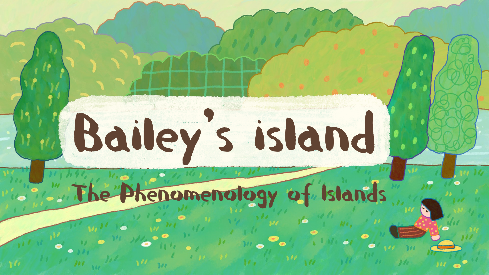
Bailey's Island 是一个围绕青少年发展变化设计的叙事型严肃游戏原型。岛屿是一处“过渡空间”：玩家能暂时与压力拉开距离，把感受变得可见，再带着新的理解回到现实。
青少年在身体、身份、同伴关系、家庭期待、学业和未来方向同时变化时，常常缺少表达痛苦的语言。项目借鉴艺术治疗、游戏化介入与情绪调节方法，让“观察、命名、重演、选择”成为可操作的体验。
设计受到 Winnicott“过渡空间”概念启发。岛不会永久替玩家隔绝现实；它提供一个安全脚手架，直到 Bailey 能把暂停、求助、表达和专注当成自己的能力。
海边相册：读手机留言、拍下海边小物并标记感受。花田长椅：观察社交线索并重演回应。心理地形：让压力变得可见。离岛启程：整理方向，再乘渡船离开。
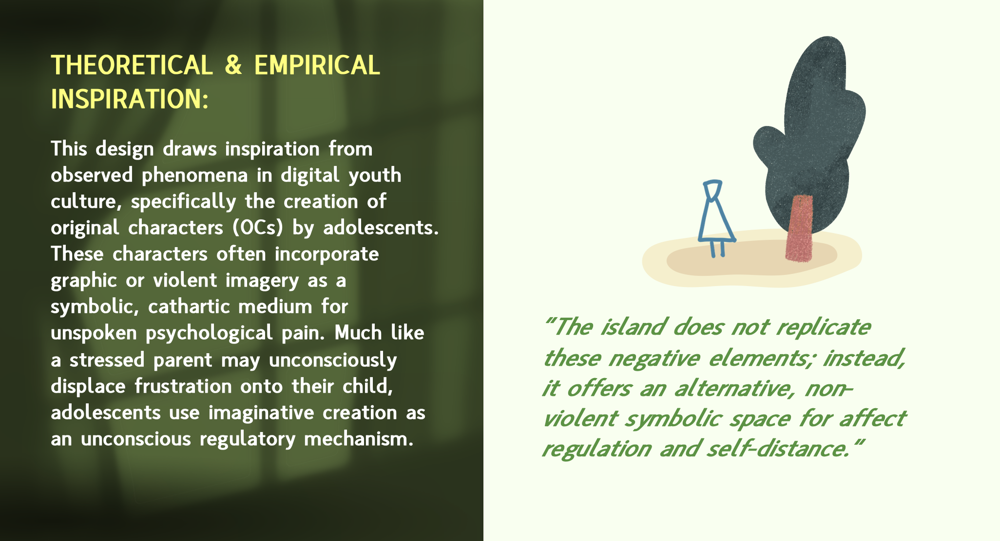
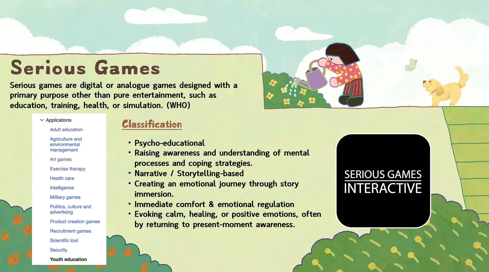
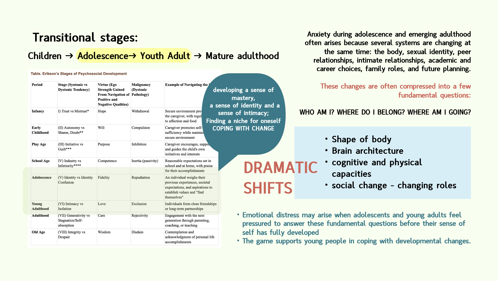
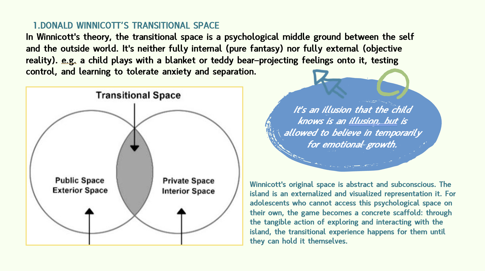
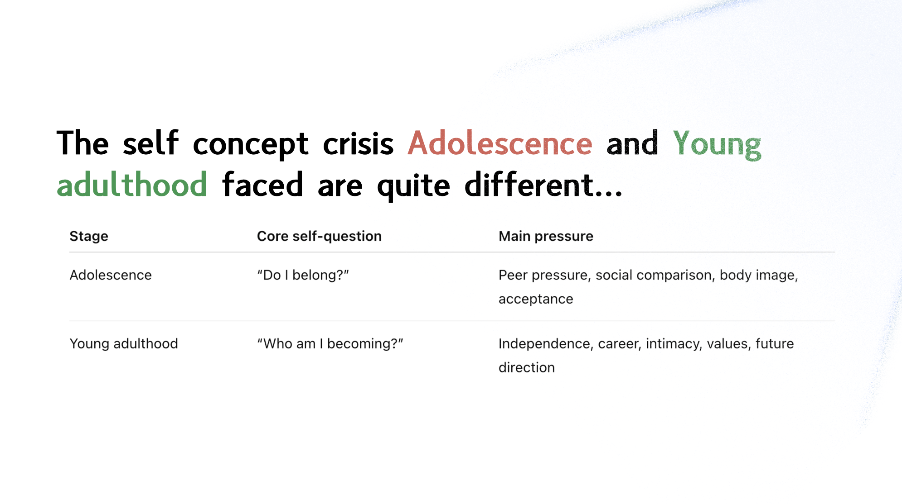
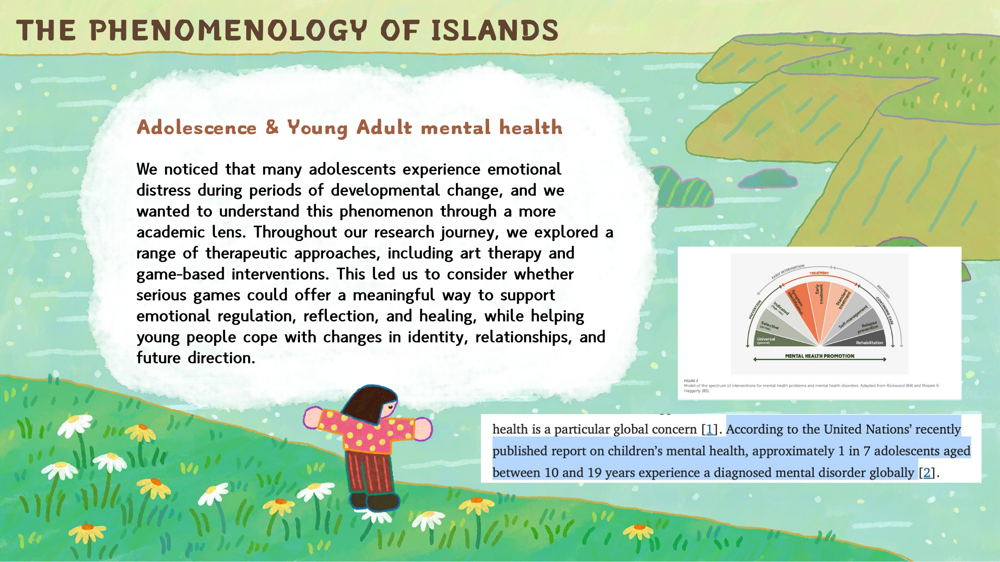
岛屿是一处暂时停靠的心理空间：树、风、水流与岸线帮助压力从模糊的身体感受，变成可以观察、命名和摆放的东西。Bailey 不是固定年龄或固定外形的人物，而是玩家在变化中的自我投影。
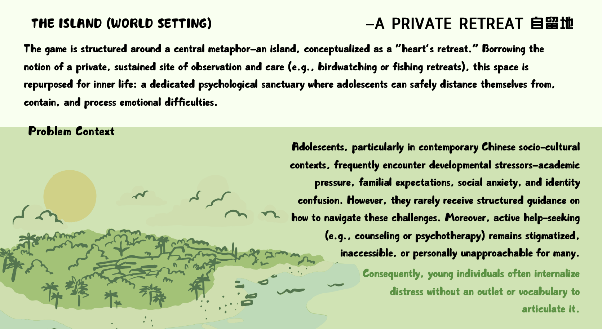
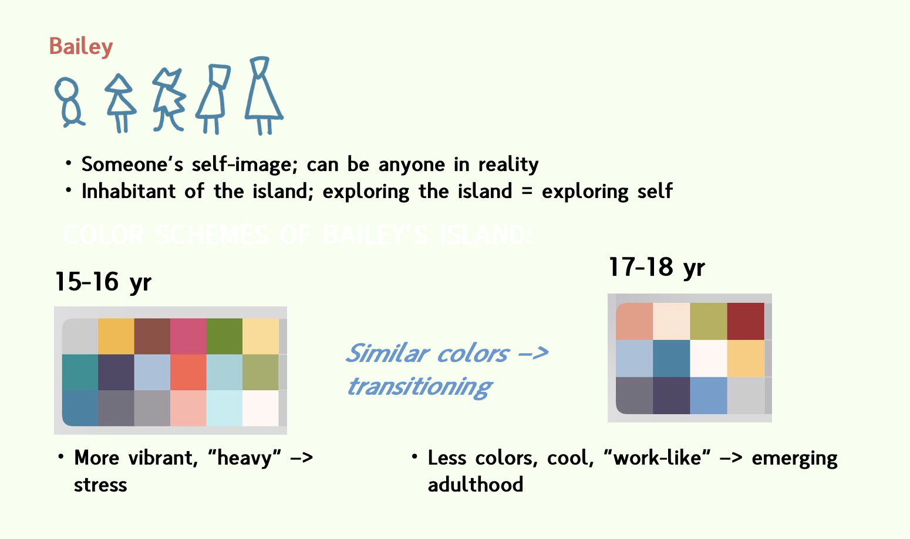
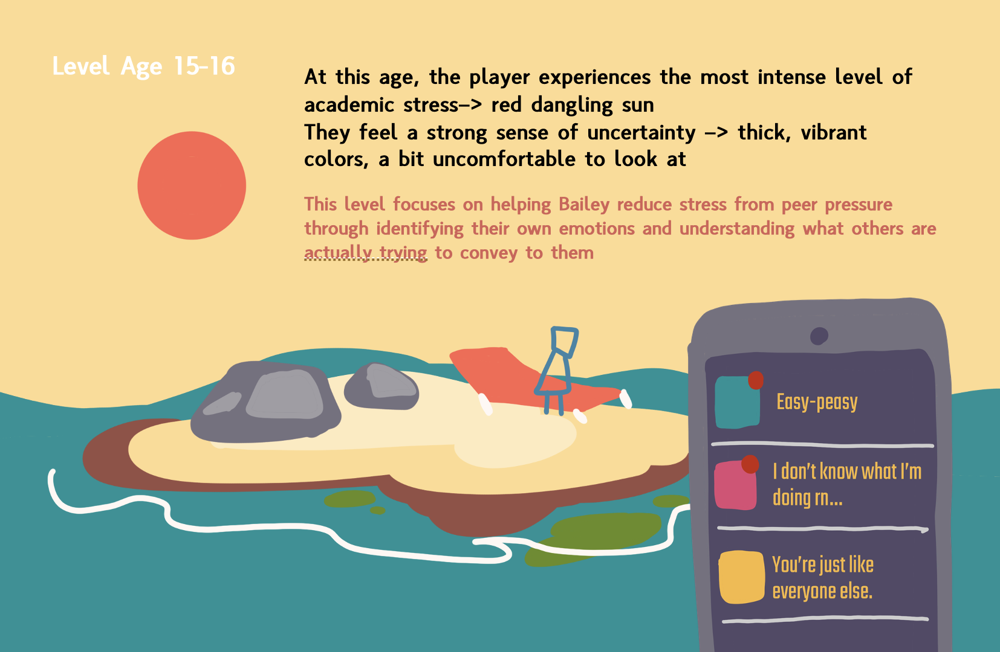
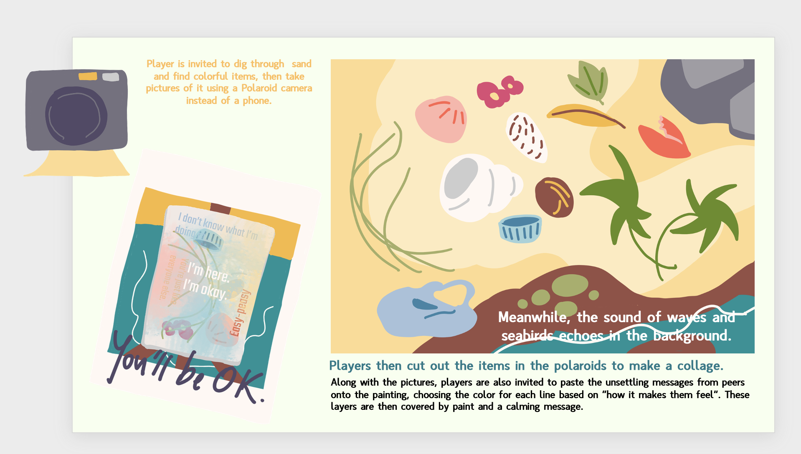
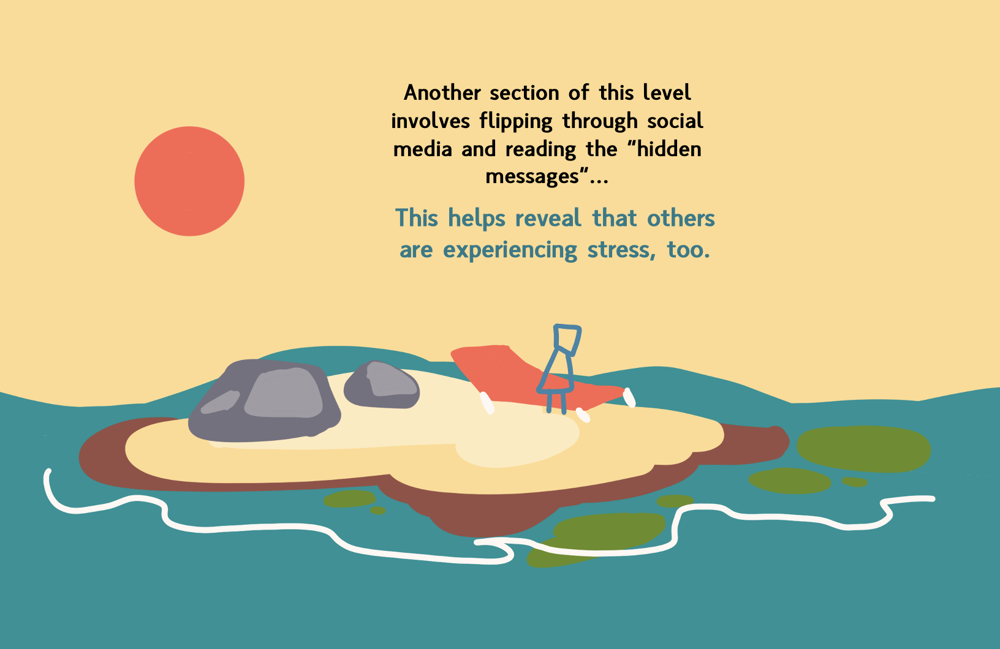
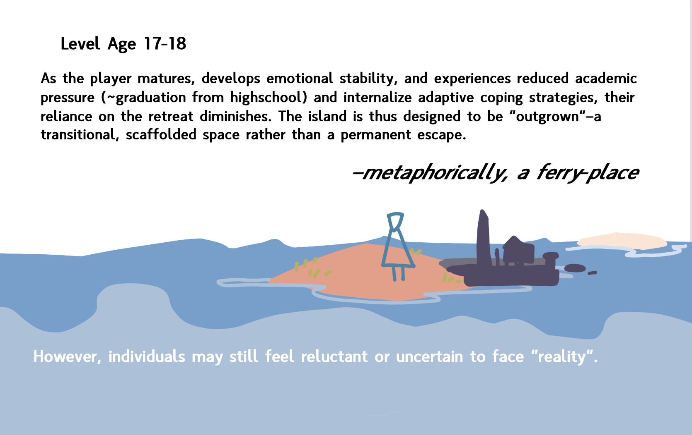
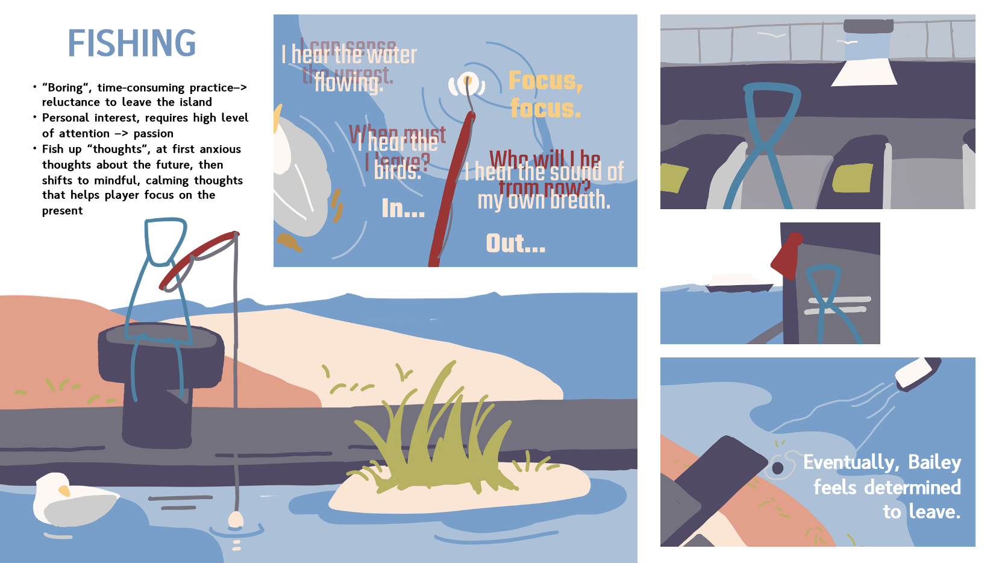